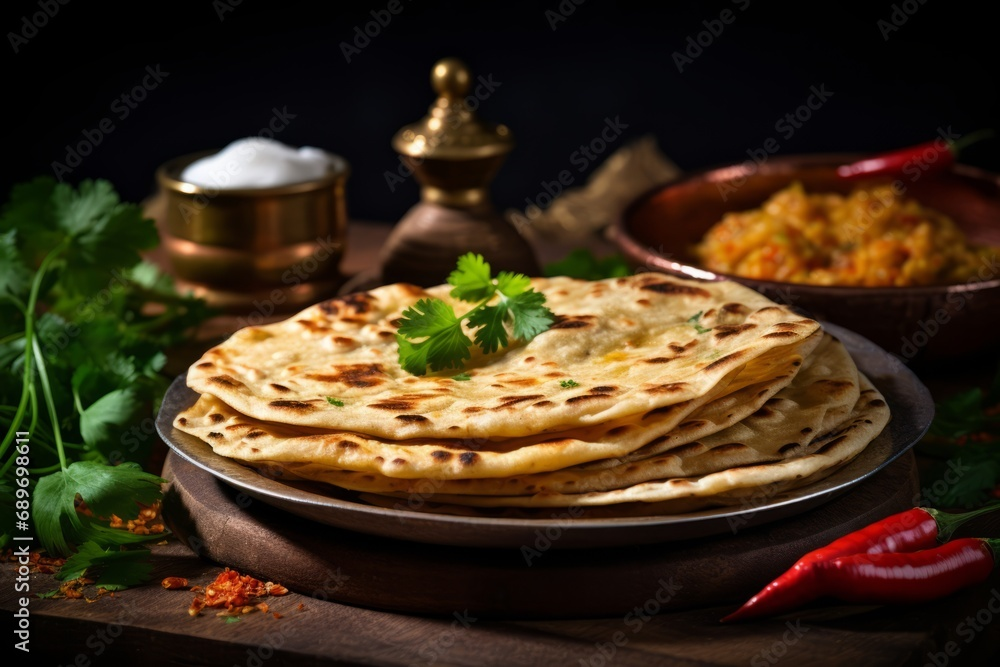
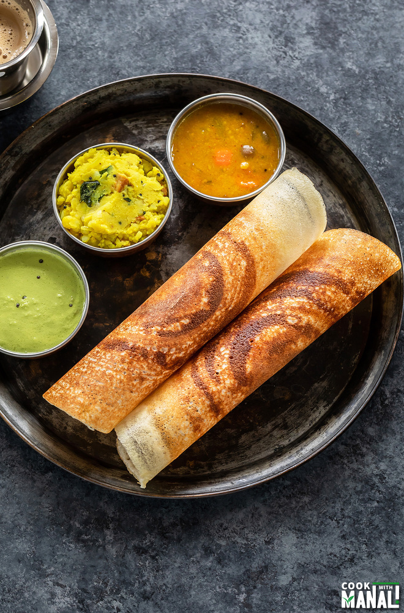

Rachie's Gallery

Biriyani
Biryani is more than just a dish its a culinary masterpiece that embodies the rich heritage and diverse culture of South Asia. This aromatic rice dish is celebrated for its complex flavors, vibrant colors, and the artful combination of spices.
Chapathi
Chapati, also known as roti, is a staple flatbread in many South Asian households. Made from whole wheat flour, water, and a pinch of salt, chapati is a versatile and nutritious addition to any meal.
Dosa
Dosa is a thin, crispy South Indian crepe made from a fermented batter of rice and urad dal (black gram). It's a beloved dish, known for its versatility and unique taste, enjoyed by people across India and around the world.